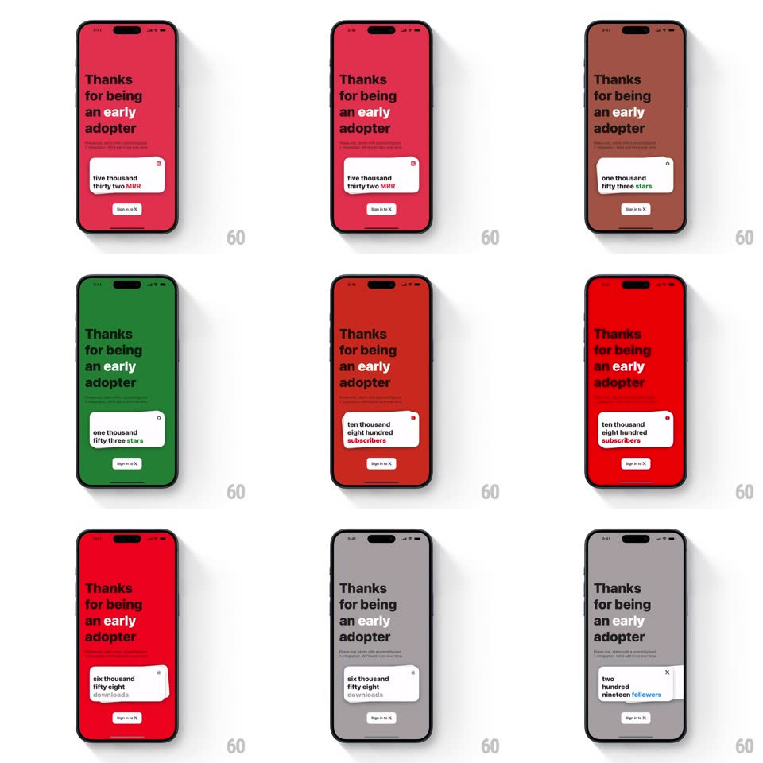

Media
Frame-by-frame

Rebuild this interaction 1:1: Countly's intro card stack - swiping the top metric card off the stack flies it away and floods the full-screen background with the next card's brand color, revealing the next stat card ("two hundred nineteen followers", "five thousand thirty two MRR", "one thousand fifty three stars", "ten thousand eight hundred subscribers").

Rebuild this interaction 1:1: Countly's intro card stack - swiping the top metric card off the stack flies it away and floods the full-screen background with the next card's brand color, revealing the next stat card ("two hundred nineteen followers", "five thousand thirty two MRR", "one thousand fifty three stars", "ten thousand eight hundred subscribers").
## Integration
Integration: stack-agnostic spec - springs given as stiffness/damping, timed motions as duration + curve; map every value to your framework and animation library of choice.
## Scene
Full-screen intro page: bold black headline "Thanks for being an early adopter" with a small subline, a white stat card (spelled-out metric in bold lowercase, small close X, "Sign in to X" button below it) floating center-lower. The entire background is a flat brand color (blue, pink/red, green, red, gray) that changes per card.
## Motion spec
Pattern: swipe-away card stack with full-bleed background color transition.
- Horizontal drag on the top card tracks 1:1 with rotation (rotate up to ~12deg toward the drag direction).
- Release past ~35% width: the card flies off-screen (velocity-based, ~300ms) while the background crossfades to the next card's brand color (~400ms, ease-in-out).
- The next card rises from the stack (scale 0.95 -> 1, translateY 12px -> 0, spring ~280/22) as the color flood completes.
- Flick under threshold: card springs back to center (spring ~320/24).
- Headline stays fixed; only the card and background color change per step.
## Calibration
- The background color change rides with the card's exit - color should already be shifting as the old card leaves.
- Spelled-out number words are the design; keep them lowercase and bold.
## Reduced motion
Card crossfades out, background crossfades color (250ms), no rotation or fly-off.
## Don't miss
- Each stat card pairs with one specific background color - the pairing is the brand moment.
- The "Sign in to X" button sits below the card and persists across swipes.